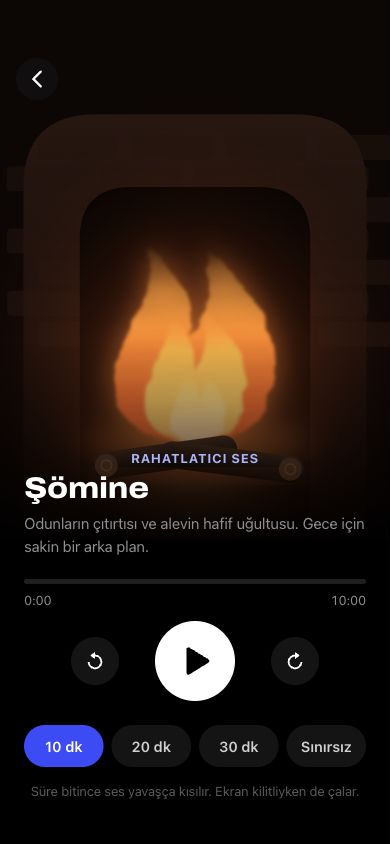

Bloom · Relaxing Sounds
Phase 11.4.2 · 13 October 2026 · local native implementation review.
HTML uses the actual supplied source functions/CSS rendered in Chrome. Native images are real iOS Simulator captures. Fonts, safe areas, paused scene phases and the isolated QA timer button differ. Playback is backed by bundled CC0 audio and real decoded native PCM.
QA report · Audio licenses · Native audio design · Engine audit · State audit
Şömine

HTML · Chrome · 390×844Native · iPhone 17 Pro · 402×874 ptLifecycle and regression evidence
The pause/expiry captures predate the final SVG seek-icon refinement; audio behavior is unchanged. The four comparison players above show the final native controls.